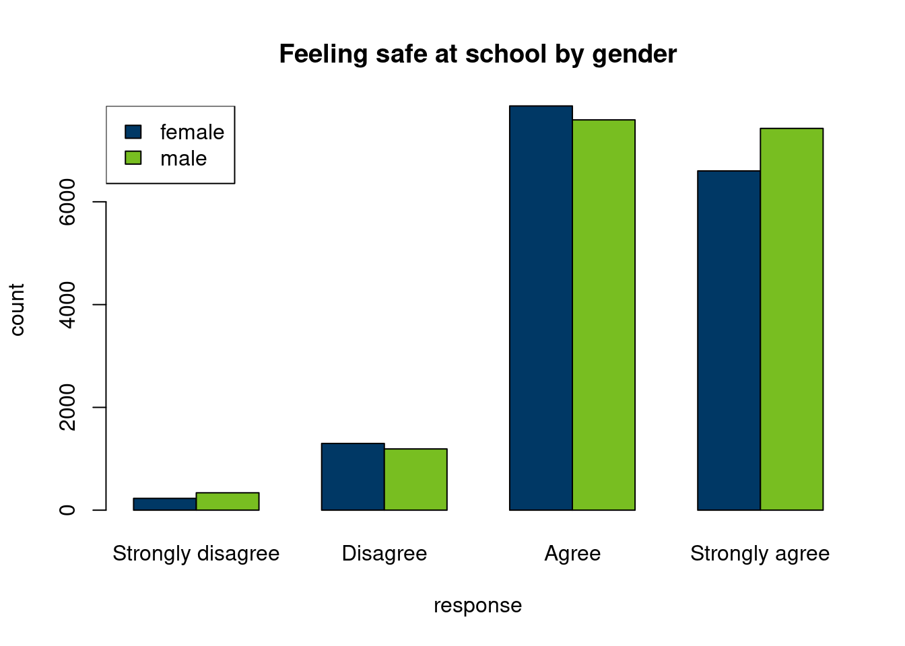
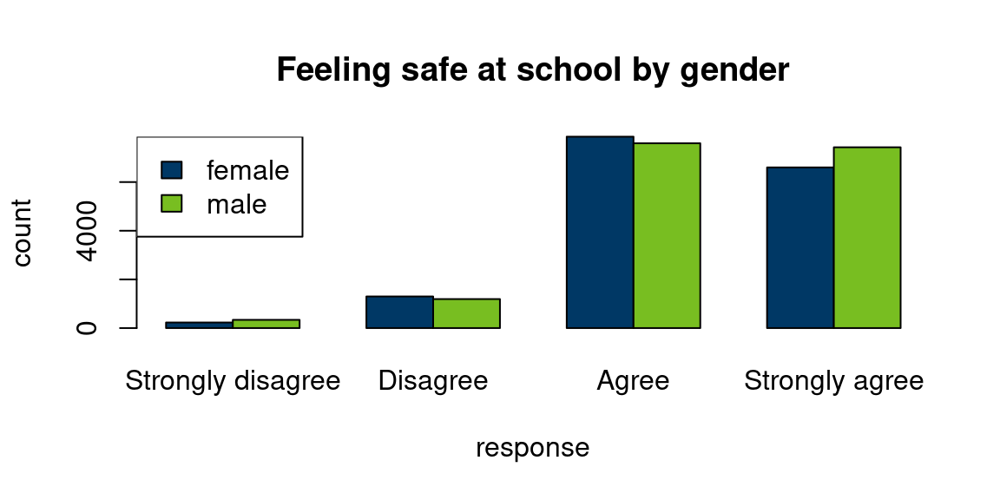

| Syntax | Symbols | Result |
|---|---|---|
`Verbatim` code |
1 backtick at each end | Verbatim code |
**Bold** font |
2 asterisks at each end | Bold font |
*Italic* font |
1 asterisk at each end | Italic font |
~~Strikethrough~~ |
2 tildes at each end | |
x^Superscript^ |
1 carrot at each end | xSuperscript |
x~Subscript~ |
1 tilde at each end | xSubscript |
Writing reproducible reports in RStudio
Rendering your content from markdown to HTML using Quarto
Introduction
This report will show you basic markdown and Quarto settings to create a reproducible report in HTML. To write reproducible reports, you need two skills. First, you need some basic knowledge about how to format your report content. Second, you need to know how to manipulate and display data within your report. We will cover formatting first, then reading in data.
To begin, create a new project in RStudio. I called mine “RCamp_reports”. Click on “File” > “New file” > “Quarto Document …” to create a new Quarto document. When the dialog asks what kind of report to create, select HTML for now.
NoteWord and PDF files
Quarto files can also be converted to:
- Word if you have Microsoft Word installed on your computer
- portable document format (PDF) if you have a tex compiler like Miktex installed on your computer
These are beyond the scope of this workshop. If you want to try them, select “PDF” or “Word” when creating a new document instead of HTML. All of the formatting syntax below should work for HTML, PDF, and Word, though results may look a bit different among the three formats. I have found Word and PDF trickier to customize than HTML, especially if you are trying to meet specific branding requirements.
Setting up your YAML
The YAML stores the metadata for your document. It includes anything that affects formatting when your document is rendered.
This list is not exhaustive. It includes of items I often use in my own work.
- Context: title, subtitle, author, date
- Format: various flavors of HTML, PDF, and Word, and which renderer to use
- Inclusions: table of contents, numbering sections
- Reference files: citation list, custom style sheet or other template file
- Formatting: instructions for how to display charts, tables, paragraphs, and other content
The YAML is always at the beginning of the document. A simple version looks something like this.
---
title: "My title"
subtitle: "My subtitle"
author: "Marvellous me"
date: "2025-10-16"
format: html
---Your turn
In the Quarto document you created, add a subtitle, author, and date. Then save your file. At any time, you can save your file and click “Render” at the top of the window to convert the file to HTML and view it. Render your document now.
- Did your file render correctly?
- If not, what went wrong?
Crash course in Markdown syntax
Before we write our report, we need to learn how to convey our information. This section will cover common markdown formatting options for content that will be compiled to portable document format (PDF), hypertext markup language (HTML), or Word documents.
NoteAdvanced options
There are many advanced formatting options in Quarto. A few common ones include:
- Use custom style sheets (CSS) to define font and paragraph colors and styles in HTML.
- Auto-generate tables of contents and citation lists.
- Auto-number sections, footnotes, citations, tables, and figures.
- Render one Quarto document within another, for example a multi-chapter book where each chapter is a separate file.
You can learn about these features and more at the links below. They are beyond the scope of this workshop.
These two online sources on Quarto formatting are probably the most up-to-date.
The resources below are for R markdown, the predecessor of Quarto, so some syntax may work differently. I include them because Quarto is new and its documentation is not as robust as for R markdown.
Text modifiers
The table below shows common markdown syntax and corresponding results.
Your turn
Try the following exercises. Use this paragraph, from the beginning of Alice’s Adventures in Wonderland by Lewis Carroll.
Alice was beginning to get very tired of sitting by her sister on the bank, and of having nothing to do: once or twice she had peeped into the book her sister was reading, but it had no pictures or conversations in it, “and what is the use of a book,” thought Alice “without pictures or conversations?”
- Bold Alice’s name.
- Italicize the dialogue.
- Cross out (strikethrough) “and having nothing to do”.
- Superscript “book” and subscript “reading”.
- Make “conversations” appear as verbatim code.
Render your document.
If you formatted everything correctly, you should get this.
Alice was beginning to get very tired of sitting by her sister on the bank,
and of having nothing to do: once or twice she had peeped into the book her sister was reading, but it had no pictures or conversations in it, “and what is the use of a book,” thought Alice “without pictures orconversations?”
Headers
Section headers (or headings) range from level 1 to level 6 and are identified in Quarto by the number of hash symbols at the beginning of the line.
# Header 1 (Heading in Word)
## Header 2 (Heading 2 in Word)
...
###### Header 6 (Heading 6 in Word)Links
Links use the syntax [title](link). For example, to link to CDC, write [CDC](http://cdc.gov). For the link to be valid, the close bracket and open parentheses need to touch, so [CDC] (http://cdc.gov) won’t work.
To link to an image, use the syntax {alt text}.
Inline notes require unique alphanumeric tags to link the content to the note. To create an inline note, put brackets and carrot around your unique tag in the format quote[^tag]. A couple lines later, type your unique tag followed by a colon, then the note, in the format [^tag]: source. The tags will be auto-numbered in order. In HTML, hovering over the tag will reveal the note and clicking on the tag will bring you to the note at the bottom of the page. For example:
| Syntax | Result |
|---|---|
|
Item to note1 |
For citations, Rstudio can reference library files, in which each source has a unique tag, when rendering Quarto. For my dissertation, I used the reference manager Mendeley to export my library to a bibtex file that RStudio could reference. There are other methods of referencing citations, as well. If using an external library file, make sure to include it in your YAML.
Your turn
This paragraph is from the beginning of Frankenstein; Or, The Modern Prometheus by Mary Wollstonecraft Shelley.
From Frankenstein by Mary Wollstonecraft Shelley
You will rejoice to hear that no disaster has accompanied the commencement of an enterprise which you have regarded with such evil forebodings. I arrived here yesterday, and my first task is to assure my dear sister of my welfare and increasing confidence in the success of my undertaking.
- Link the title to the webpage https://www.gutenberg.org/ebooks/84.
- Add an inline footnote at the end of the passage. The note should say something like “A passage from the first letter to Mrs Saville.”
Render your document.
Paragraph formatting
To create a new paragraph, leave an empty line between paragraphs. To add a line break within a paragraph, put a backslash at the end of the first line.
| Syntax | Result |
|---|---|
|
This is paragraph 1 without a line break. This is paragraph 2. |
|
This is paragraph 1 This is paragraph 2. |
Below is an example of the syntax for a poem in markdown.
**Spring R**, *a haiku by Abby Stamm* Spring softly greening \ Out my window while indoors \ With R I struggle.
This is how it renders.
Spring R, a haiku by Abby Stamm
Spring softly greening
Out my window while indoors
With R I struggle.
Your turn
The excerpt below is from Act II, Scene II of Romeo and Juliet by William Shakespeare.
ROMEO. Lady, by yonder blessed moon I vow, That tips with silver all these fruit-tree tops,— JULIET. O swear not by the moon, th’inconstant moon, That monthly changes in her circled orb, Lest that thy love prove likewise variable.
- Add line breaks and paragraph breaks to match the formatting above.
Render your document.
Lists
Unordered lists
To create unordered lists, you can use the symbols plus (+), minus (-), and asterisk (*). They all produce the same black round bullet. It is possible to customize bullets using CSS, but that is beyond the scope of this workshop.
| Syntax | Symbols | Result |
|---|---|---|
|
plus sign, then space |
|
|
minus sign, then space |
|
|
asterisk, then space |
|
There are also some special symbols for lists, such as checkboxes.
| Syntax | Symbols | Result |
|---|---|---|
|
minus sign & brackets separated by spaces | |
|
minus sign then space then brackets around an x then space |
Your turn
The animated segment “I can remember” (Jim Simon, Sesame Street season 4) includes the quote, “a loaf of bread, a container of milk, and a stick of butter”.
- Make a bullet list of these groceries.
- Make a second list with checkboxes.
- Check off the items you have in your kitchen or pantry. (Vegan and gluten-free options are acceptable, too.)
Render your document.
Ordered lists
Ordered list symbols include numbers and letters.
Warning
Most ordered list symbols require two spaces before the item, not one. Two spaces will always work if you want to be consistent.
Some Markdown compilers will put list items in sequential order as shown below, even if you have not typed them in order. Quarto can reorder numbers and letters, but not roman numerals. Single letters except i or I are assumed to be letters, not roman numerals.
| Syntax | Symbols | Result |
|---|---|---|
|
number, then period, then one space |
|
|
letter, then period, then two spaces |
|
|
letter, then period, then two spaces |
|
|
letter, then period, then two spaces |
|
|
letters, then period, then two spaces |
|
If you want to add a second level to your list, add 4 spaces before each second level item. A shortcut is to highlight that line and press tab twice if you use RStudio’s default tab length of two spaces.
Tip
I like to create lists in which all items start with the same starting letter or number as shown below. This makes them easier to reorder and revise later.
You can mix item types across levels, but not within the same level.
| Syntax | Symbols | Result |
|---|---|---|
|
4 spaces before each sub-item, all sub-items the same list type |
|
|
4 spaces before each sub-item, all sub-items the same list type |
|
|
4 spaces before each sub-item, all sub-items the same list type |
|
For each subsequent level, follow the same pattern as for the second level. Add four extra spaces at the beginning for each sub-level and keep list types consistent within each level.
If you want to break items in one level across lines in code, just indent the item without a bullet.
| Syntax | Symbols | Result |
|---|---|---|
|
indent subsequent lines of the same item |
|
|
indent sub-items based on their level |
|
|
indent sub-items based on their level |
|
Your turn
Inspired by the English Christmas song, “The Twelve Days of Christmas” (circa 1780), I invested in an aviary. I now have a peahen named Ava, a couple doves named Betty and Cam, three chickens named Dora, Emmie, and Fran, and a quartet of blackbirds named Grace, Heather, Ida, and Joy.
- Create a numbered list of the species of birds I have, from least to most.
- Under each bird species, add a lettered sub-list with the names of my birds of that species.
- As an extra challenge, use Roman numerals for one of the sub-lists.
Render your document.
Callout boxes
There are five types of callout boxes: note, tip, warning, caution, and important. Each box has a different color, symbol, and caption by default. Note that in Word, callout boxes are rendered as tables, not text boxes, so they should be accessible to screen readers.
| Syntax | Result |
|---|---|
|
Important
This is important. |
|
Note
This is a note. |
|
Warning
This is a warning. |
|
Tip
This is a tip. |
|
CautionMy title
This caution has a title. |
Your turn
The quotes below are excerpts from Alice’s Adventures in Wonderland by Lewis Carroll. Put each in the appropriate type of callout box.
- “Keep your temper,” said the Caterpillar. (important)
- “Serpent!” screamed the Pigeon. (warning)
- “If everybody minded their own business,” the Duchess said in a hoarse growl, “the world would go round a deal faster than it does.” (tip)
- Give each of your callout boxes a title.
Render your document.
Equations
To include a formula, wrap it in dollar signs. If you want the equation to be on its own line, use double dollar signs. In RStudio, when you mouse over an equation with single dollar signs, the pop-up will display how it will render and when you type an equation with double dollar signs, RStudio will show a rendering immediately below the equation.
$y_1 = ax^2 + bx + c$ renders to \(y_1 = ax^2 + bx + c\).
Advanced syntax for equations is outside the scope of this workshop. Read R Markdown for Scientists, Chapter 11 for an introduction to making complex equations like
\[x = \frac{-b \pm \sqrt{b^2 - 4ac}}{2a}\]
To include inline R code, begin the verbatim syntax with “r”.
For example, “2 + 2 =
`r 2+2`” renders to “2 + 2 = 4”.
Your turn
- Write the equation \(a^2 + b^2 = c^2\) in a sentence.
- Write the same equation centered on its own line.
- Write some R code in a sentence, such as “1 + 2 + 3” or 4^2.
Render your document.
Mixing and matching
Try mixing and matching the coding options above.
- Can you put a link, a list, or bold text inside a callout box?
- Can you add a footnote to an item in your list or callout box?
- Can you add an equation to your list?
Writing a report
Now that you know the basics of markdown and Quarto, let’s start a fresh report. Open a new Quarto file that will write to HTML. Add author and date to the YAML.
Include code blocks as part of your report, the way I show below. Also include text outside the code blocks to explain what you are doing.
Set up your workspace
Create a “data” folder in your project.
Download an Excel file from Minnesota Student Survey Reports. Choose whichever options you want, then under “Download”, select “Summary-xls”.
The options I selected for this example report were:
- Level: State
- Name: Statewide
- Year: 2022
- Grade: Grade 5
- Category: Health
- Report: ALL
- Demographics: ALL
Your new file will have a name like “Minnesota_Student_Survey_Summary_Health_0000-00_2022.xlsx”. Move it from your downloads to the data folder in your project.
To include the data from your file in your report, you will need to create a code block using the following syntax. The code blocks in this workshop are all for R, but code blocks can also be used for other languages, such as python.
```{r}
# this is a basic code block
```To label your code block to make navigation in RStudio easier, add a unique tag after the r inside {r}. Follow the same rules as when naming R objects.
```{r my_unique_tag}
# this is a basic code block with a unique tag
```The file we downloaded is an Excel file, which R cannot read on its own. To import the file we will use the “readxl” package. Check if you have it installed. If you do not, install it using either the install dialog under “Tools” or the install.packages() function as shown below.
# if readxl is not installed, run this code to install it.
install.packages("readxl")Change the value of the filename (my_file) to match the name of the file you downloaded. Often in my reports, the first or second code block of the document, above the introduction, will contain any dynamic values, such as filenames, date ranges, and health outcomes of interest.
my_file <- "../data/Minnesota_Student_Survey_Summary_Health_0000-00_2022.xlsx"# keep "data/" to read from the "data" folder when you change my_file
my_file <- "data/Minnesota_Student_Survey_Summary_Health_0000-00_2022.xlsx"Import your data
NoteTwo ways to read functions from libraries
Often code begins with a library call, such as library(readxl). I have several reasons for not using that method.
- Some packages, such as “terra”, are huge and often I only want one or two fuctions from them.
- Some function names appear in multiple packages. If you don’t specify the package, R uses the function from the most recent package loaded.
- When building an R package, loading full libraries is discouraged, so for me it’s habit not to.
- When loading package sets like tidyverse, keeping track of which package a function came from can be confusing, so I prefer to be explicit.
Instead of loading the package first, I call the function by using the syntax package::function(). This is the method I will use in this workshop.
If you prefer to load the full library first, then use only the function name, feel free.
In the next code block, you will import your data. Open the file in Excel. The first row is a human-readable heading instead of true data. We want to skip that row when we import the data into R, so we will use the option skip = 1.
TipCreating R readable Excel files
When I create Excel files to read into R, I always make my data sheets computer readable, with no headers or merged cells. If I need to include human readable metadata, I will put it on its own in the first sheet, then add the option sheet = 2 (or whatever number) when I import my data.
my_mss_data <- readxl::read_xlsx(my_file, skip = 1, sheet = 1)Subset your data
The dataset we imported combines results for all fifth graders who took the MSS, so complex analyses are not possible. Instead, we will focus on displaying simple results.
Subset the dataset to include only questions about safety, specifically feeling safe at school. Below, I use dplyr, a package in the tidyverse constellation of packages. If you prefer, you can also use base R.
# feel free to combine the filters and run both at once if you want
safety_qs <- dplyr::filter(my_mss_data, Report == "Perceptions of Safety")
safe_school <- dplyr::filter(safety_qs, Question == "I feel safe at school.")We want to display a bar chart of feeling safe at school by gender, but the data are messy. To put the data in a format that’s easier to graph, I am using the tidyr package, which is part of the tidyverse universe, but it is not installed as part of tidyverse, and the janitor package.
# if tidyr and janitor are not installed, run this code to install them.
install.packages("janitor")
install.packages("tidyr")We will transform the data in four steps, outlined below. If you are fond of tidyverse piping, feel free to use it here. If you are just learning this code, review safe_school_tidy after running each function to notice how it has changed. To run only one line, highlight it and click the chevron next to “Run” in the upper right corner of the window. Click “Run Selected Line(s)”.
# first, clean variable names to make them easier to work with
safe_school_tidy <- janitor::clean_names(safe_school)
# second, isolate only the variables of interest
safe_school_tidy <- dplyr::select(safe_school_tidy, question, response,
female_count, male_count)
# third, transform the data so gender is one column and count is another
safe_school_tidy <- tidyr::pivot_longer(safe_school_tidy, c(male_count, female_count),
names_to = "gender", values_to = "count")
# fourth, clean up the values in the "gender" column
safe_school_tidy <- dplyr::mutate(safe_school_tidy, gender = gsub("_count", "", gender))
TipCode block formatting best practice
In RStudio, you will see a vertical line at character 80 in your Quarto document, unless you deliberately changed the default. This line is important if you intend to include your code in your document. Code blocks do not wrap lines, so for all of your code to show up, you need to create manual line breaks like I did above.
If you do not intend to show your code, these line breaks don’t matter as much, but it is still a good practice to develop for future projects where you will need to show your code.
The last data transformation step is to convert all of our variables to numbers so they can be plotted using barplot(). In R, factors are numbers with string labels, so we will convert character variables to factors. You may have noticed the count is a character variable that contains a comma after the thousands digit. For R to read it correctly, we will manually remove the comma, then convert the values to numeric. To review variable types before and after running the code below, use str(safe_school_tidy).
safe_school_tidy <- dplyr::mutate(safe_school_tidy,
gender = factor(gender, levels = c("female", "male")),
response = factor(response, levels = c("Strongly disagree", "Disagree",
"Agree", "Strongly agree")),
count = as.numeric(gsub(",", "", count))
)Now that we have prepared the data, let’s create a chart.
```{r chart_basic}
# draw the plot
barplot(count ~ gender + response, data = safe_school_tidy, beside = TRUE,
col = c("#003865", "#78BE21"), main = "Feeling safe at school by gender")
# add a legend
legend("topleft", legend = c("female", "male"), fill = c("#003865", "#78BE21"))
```
Note that we will also want the chart to be accessible, with a title, caption, and alt text. We can customize several other settings for charts, including height and width. Note that rendering to Word may result in the caption being incorrectly assigned to the alt text, so you will want to verify in Word after rendering.
```{r chart_custom}
#| fig-width: 6 # Width for figures in inches
#| fig-height: 3 # Height for figures in inches
#| fig-align: "left"
#| fig-alt: "Chart of counts of how safe students feel at school by gender"
#| fig-cap: "Male and female students feel similarly safe at school."
# redraw the plot
barplot(count ~ gender + response, data = safe_school_tidy, beside = TRUE,
col = c("#003865", "#78BE21"), main = "Feeling safe at school by gender")
# add a legend
legend("topleft", legend = c("female", "male"), fill = c("#003865", "#78BE21"))
```
To increase accessibility to the data in your chart, providing the data as text is recommended. When compiling to HTML, Quarto can create data tables that can be read properly by screen readers.
knitr::kable(safe_school_tidy,
caption = "Table of how safe students feel at school by gender")| question | response | gender | count |
|---|---|---|---|
| I feel safe at school. | Strongly agree | male | 7428 |
| I feel safe at school. | Strongly agree | female | 6601 |
| I feel safe at school. | Agree | male | 7594 |
| I feel safe at school. | Agree | female | 7865 |
| I feel safe at school. | Disagree | male | 1192 |
| I feel safe at school. | Disagree | female | 1298 |
| I feel safe at school. | Strongly disagree | male | 338 |
| I feel safe at school. | Strongly disagree | female | 230 |
Your turn
Select a new question and recreate the chart and table. Suggestions for an extra challenge:
- “I feel safe at home.” for all students combined
- “I feel safe in my neighborhood.” for only girls
- The same chart as in the example, showing percents instead of counts
Make sure your caption and alt text match your data.